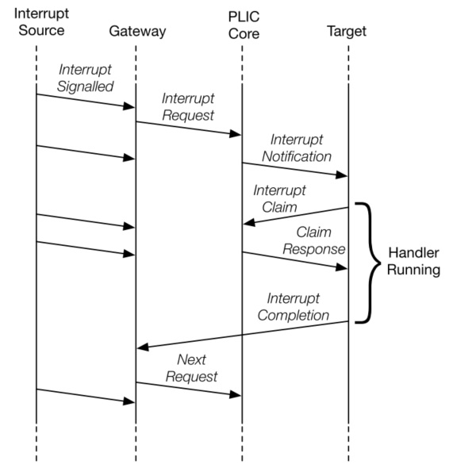

RISC-V Platform-Level Interrupt Controller Platform-Level Interrupt Controller Chapter 1. Introduction 1.1. Introduction This specification delineates the operation parameters according the general PLIC architecture defined in the RISC-V platform-level interrupt controller (PLIC) specification (was removed from RISC-V Privileged Spec v1.11-draft) to work in the context of RISC-V systems. The PLIC multiplexes various device interrupts onto the external interrupt lines of Hart contexts, with hardware support for interrupt priorities. PLIC supports up-to 1023 interrupts (0 is reserved) and 15872 contexts, but the actual number of interrupts and context depends on the PLIC implementation. However, the implementation must adhere to the offset of each register within the PLIC operation parameters. The PLIC which claimed as PLIC-Compliant standard PLIC should follow the implementations mentioned in sections below. 1.1.1. Interrupt Targets and Hart Contexts Interrupt targets are usually hart contexts, where a hart context is a given privilege mode on a given hart (though there are other possible interrupt targets, such as DMA engines). For example, in an 4-core system with 2-way SMT, you have 8 harts and probably at least two privilege modes per hart: machine mode and supervisor mode (Ref). Not all hart contexts need be interrupt targets, in particular, if a processor core does not support delegating external interrupts to lower-privilege modes, then the lower-privilege hart contexts will not be interrupt targets. Interrupt notifications generated by the PLIC appear in the meip/seip bits of the mip/sip registers for M/S modes respectively. Previous versions of this specification indicated that the PLIC supports U-mode interrupts. This text was removed because the privileged architecture does not define U-mode interrupts. If a future privileged architecture specifies U-mode interrupts, this PLIC specification can be straightforwardly extended to support them. The notification only appear in lower-privilege xip registers if external interrupts have been delegated to the lower-privilege modes. Each processor core must define a policy on how simultaneous active interrupts are taken by multiple hart contexts on the core. For the simple case of a single stack of hart contexts, one for each supported privileged mode, interrupts for higher-privilege contexts can preempt execution of interrupt handlers for lower-privilege contexts. A multithreaded processor core could run multiple independent interrupt handlers on different hart contexts at the same time. A processor core could also provide hart contexts that are only used for interrupt handling to reduce interrupt service latency, and these might preempt interrupt handlers for other harts on the same core. The PLIC treats each interrupt target independently and does not take into account any interrupt prioritization scheme used by a component that contains multiple interrupt targets. As a result, the PLIC provides no concept of interrupt preemption or nesting so this must be handled by the cores hosting multiple interrupt target contexts. RISC-V PLIC Interrupt Architecture Block Diagram 1.1.2. Interrupt Gateways The interrupt gateways are responsible for converting global interrupt signals into a common interrupt request format, and for controlling the flow of interrupt requests to the PLIC core. At most one interrupt request per interrupt source can be pending in the PLIC core at any time, indicated by setting the source’s IP bit. The gateway only forwards a new interrupt request to the PLIC core after receiving notification that the interrupt handler servicing the previous interrupt request from the same source has completed. If the global interrupt source uses level-sensitive interrupts, the gateway will convert the first assertion of the interrupt level into an interrupt request, but thereafter the gateway will not forward an additional interrupt request until it receives an interrupt completion message. On receiving an interrupt completion message, if the interrupt is level-triggered and the interrupt is still asserted, a new interrupt request will be forwarded to the PLIC core. The gateway does not have the facility to retract an interrupt request once forwarded to the PLIC core. If a level-sensitive interrupt source deasserts the interrupt after the PLIC core accepts the request and before the interrupt is serviced, the interrupt request remains present in the IP bit of the PLIC core and will be serviced by a handler, which will then have to determine that the interrupt device no longer requires service. If the global interrupt source was edge-triggered, the gateway will convert the first matching signal edge into an interrupt request. Depending on the design of the device and the interrupt handler, in between sending an interrupt request and receiving notice of its handler’s completion, the gateway might either ignore additional matching edges or increment a counter of pending interrupts. In either case, the next interrupt request will not be forwarded to the PLIC core until the previous completion message has been received. If the gateway has a pending interrupt counter, the counter will be decremented when the interrupt request is accepted by the PLIC core. Unlike dedicated-wire interrupt signals, message-signalled interrupts (MSIs) are sent over the system interconnect via a message packet that describes which interrupt is being asserted. The message is decoded to select an interrupt gateway, and the relevant gateway then handles the MSI similar to an edge-triggered interrupt. 1.1.3. Interrupt Notifications Each interrupt target has an external interrupt pending (EIP) bit in the PLIC core that indicates that the corresponding target has a pending interrupt waiting for service. The value in EIP can change as a result of changes to state in the PLIC core, brought on by interrupt sources, interrupt targets, or other agents manipulating register values in the PLIC. The value in EIP is communicated to the destination target as an interrupt notification. If the target is a RISC-V hart context, the interrupt notifications arrive on the meip/seip bits depending on the privilege level of the hart context. (In simple systems, the interrupt notifications will be simple wires connected to the processor implementing a hart. In more complex platforms, the notifications might be routed as messages across a system interconnect.) The PLIC hardware only supports multicasting of interrupts, such that all enabled targets will receive interrupt notifications for a given active interrupt. (Multicasting provides rapid response since the fastest responder claims the interrupt, but can be wasteful in high-interrupt-rate scenarios if multiple harts take a trap for an interrupt that only one can successfully claim. Software can modulate the PLIC IE bits as part of each interrupt handler to provide alternate policies, such as interrupt affinity or round-robin unicasting.) Depending on the platform architecture and the method used to transport interrupt notifications, these might take some time to be received at the targets. The PLIC is guaranteed to eventually deliver all state changes in EIP to all targets, provided there is no intervening activity in the PLIC core. (The value in an interrupt notification is only guaranteed to hold an EIP value that was valid at some point in the past. In particular, a second target can respond and claim an interrupt while a notification to the first target is still in flight, such that when the first target tries to claim the interrupt it finds it has no active interrupts in the PLIC core.) 1.1.4. Interrupt Identifiers (IDs) Global interrupt sources are assigned small unsigned integer identifiers, beginning at the value 1. An interrupt ID of 0 is reserved to mean “no interrupt”. Interrupt identifiers are also used to break ties when two or more interrupt sources have the same assigned priority. Smaller values of interrupt ID take precedence over larger values of interrupt ID. 1.1.5. Interrupt Flow Below figure shows the messages flowing between agents when handling interrupts via the PLIC. Global interrupts are sent from their source to an interrupt gateway that processes the interrupt signal from each source Interrupt gateway then sends a single interrupt request to the PLIC core, which latches these in the core interrupt pending bits (IP). The PLIC core forwards an interrupt notification to one or more targets if the targets have any pending interrupts enabled, and the priority of the pending interrupts exceeds a per-target threshold. When the target takes the external interrupt, it sends an interrupt claim request to retrieve the identifier of the highest priority global interrupt source pending for that target from the PLIC core. PLIC core then clears the corresponding interrupt source pending bit. After the target has serviced the interrupt, it sends the associated interrupt gateway an interrupt completion message The interrupt gateway can now forward another interrupt request for the same source to the PLIC. PLIC Interrupt Flow  Contributors Chapter 2. RISC-V PLIC Operation Parameters